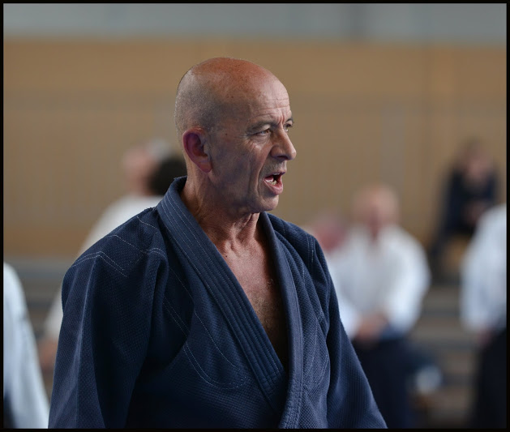

Eurasia
L'Organisation Eurasia Aikido
L'Organisation internationale Eurasia Aikido a étè créé par Nebi Vural Sensei. Il est le directeur technique et fait partie de ces maîtres dont l'Aikido exprime le geste pur et efficace.
Nebi VURAL

Né le 29 septembre 1951 à Çıldır, (Turquie). Il débute l'étude des arts martiaux à l'àge de 15 ans, puis il commence la pratique de l'Aikido en 1973 sous la direction de Maître TAMURA auprès duquel il continue d'approfondir sa recherche. En France, il est actuellement Chargé d'Enseignement National pour la FFAB. Grâce à ses qualités techniques et pédagogiques, il a su développer la pratique de l'Aikido au-delà des frontières et se déplace aujourd'hui chaque semaine pour promouvoir et transmettre l'Aikido dans le monde entier.